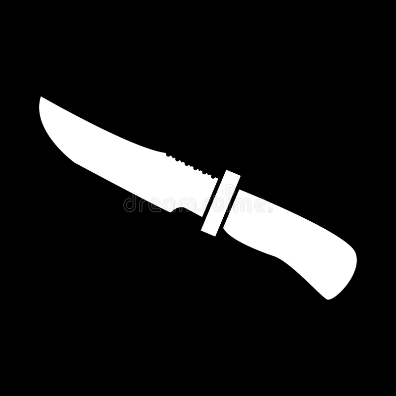
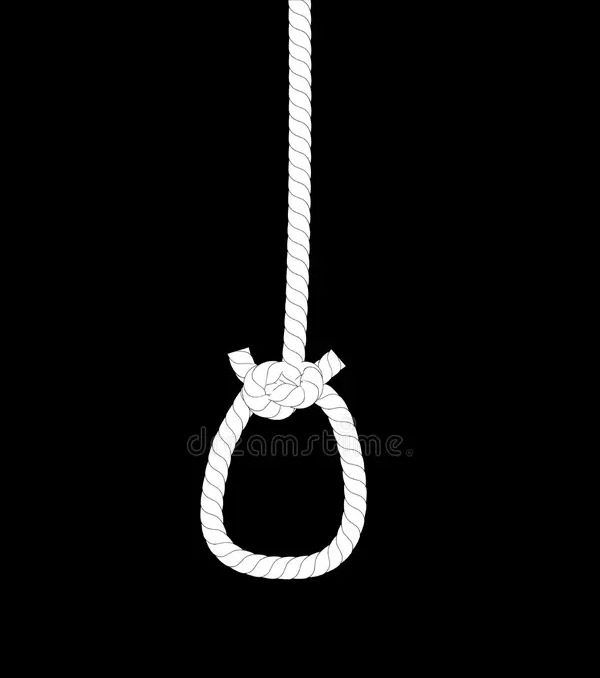
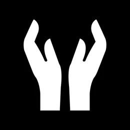

Caso N°04 Fragmentos del silencio
El sujeto vio algo que no debia lo cual lo condeno a ser encontrado sin vida y descuartizado

Caso N°10 Silencio en el ático
El sujeto fue encontrado colgado en el ático de su antigua casa
Caso N°17 La habitación del eco
La puerta fue encontrada cerrada y solo había una libreta con un mensaje extraño

Caso N°21 Merodeador nocturno
Ella sentía que alguien la observaba desde hacía tiempo, salió a verificar que todo estaba en orden lo que la llevó a ser vista por última vez en el patio de su casa
Caso N°28 El brillo perfecto
Dos sujetos armados roban una joyería y de paso el dinero de la caja que había en la joyería